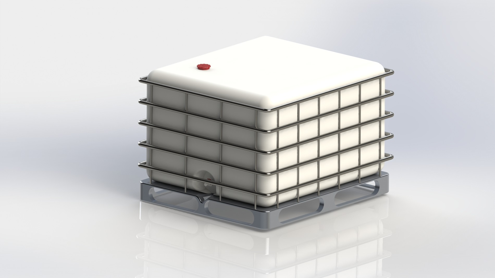
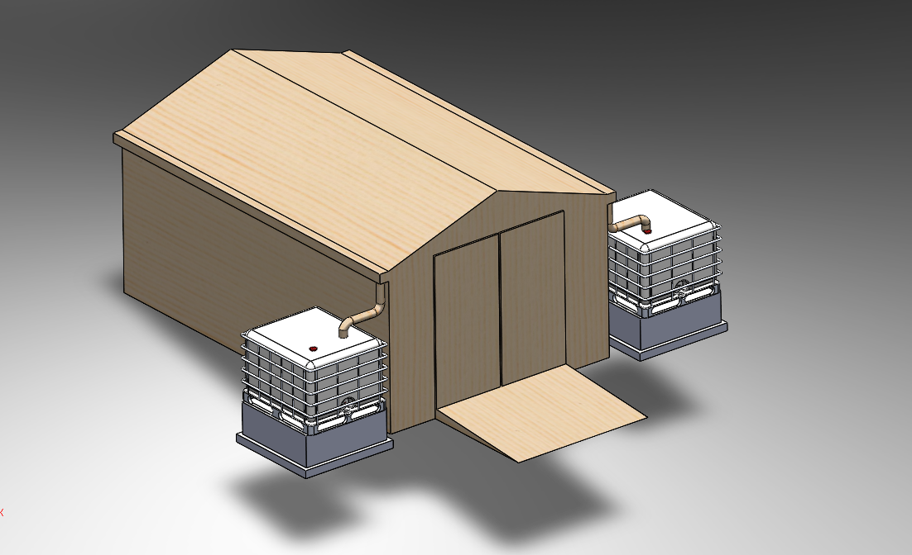

club_school_projects
engineers_without_borders
University of Massachusetts: I functioned as a project manager for the local project, overseeing two main projects — the repair of a greenhouse and development of a root-zone heating system powered by biogas to keep plants warm in the colder months.
University of Minnesota: I was part of the water storage sub-team working on a rainwater catchment system for a local church, allowing them to water their plants using the rainwater. As I was only at Minnesota for a semester, I did not get to participate in the implementation of the system, but I did work on much of the design, along with modeling the system for presentation purposes.

v1 Concept assembly in greenhouse cutout (Autodesk Inventor) — UMASS

Dimensionally accurate modeled and rendered water cistern (SolidWorks) — UMN

Full water catchment system assembly (SolidWorks) — UMN